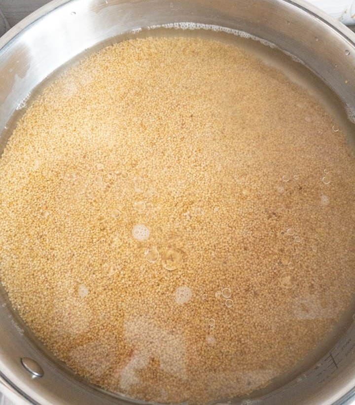
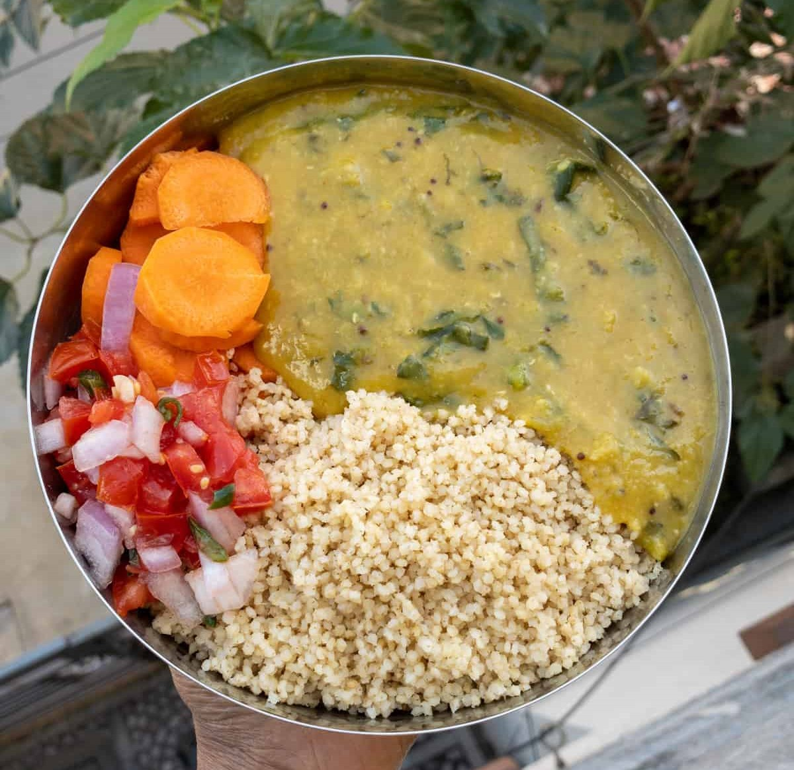
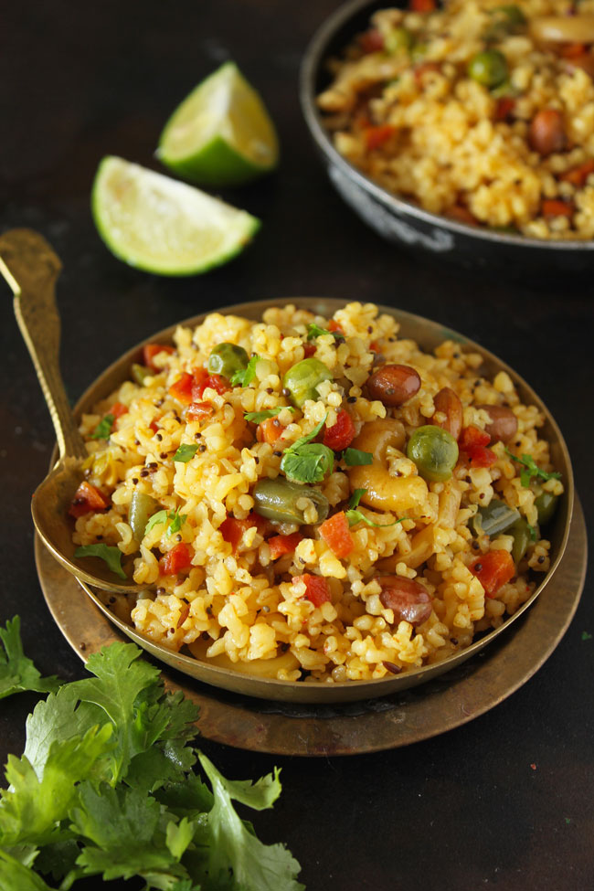

CONNECT WITH HEALTHY LIFE
CONNECT WITH HEALTHY LIFE
தேவையான பொருட்கள்:
செய்முறை:
1. பீஜே குதிரைவாலி அரிசியை ஊற வைக்க தேவையில்லை .

2. கழுவி பிரஷர் குக்கரில் (சிட்டிகை உப்புடன்) 3 விசில்.
3. கார குழம்பு அல்லது சாம்பாருடன் சூடாக பரிமாறவும்.

தேவையான பொருட்கள்:
செய்முறை:
1. பீஜே குதிரைவாலி அரிசியை கழுவி 10 நிமிடம் ஊற வைக்கவும். .
2.பிரஷர் குக்கரில், மிதமான தீயில் எண்ணெயை சூடாக்கவும்.
3. தாளிக்க கொடுத்துள்ள பொருட்களை வதக்கவும்.
4. பச்சை மிளகாய், வெங்காயம், இஞ்சி பூண்டு விழுது சேர்த்து பச்சை வாசனை போகும் வரை வதக்கவும்.
5. தக்காளி, நறுக்கிய காய்கறிகள் மற்றும் தேவையான உப்பு சேர்க்கவும்.
6. ஊறவைத்த அரிசியைச் சேர்த்து, அதில் 2 கப் தண்ணீர் ஊற்றவும்.
7. 2 விசில் வரும் வரை பிரஷர் செய்யவும்.
8. அழுத்தம் குறையும் வரை காத்திருங்கள்.
9. இந்த கிச்சடியில் நெய் சேர்த்து நன்கு கலக்கவும்.
10.சூடாக பரிமாறவும்.
